hole-maker
説明
hole-makerは、街モデルに足跡モデル型の穴を開けるモデル改造ツールです。
使用の際は、街モデル側の利用規約をよく読み、モデル改造が許可されていることを確認してください。
本説明において、街モデルとは、銀匙Pの銀匙湾や、SkyBlue氏の空色町などの、広域系の背景モデルのことを指します。
また、本説明において、足跡モデルとは、SS氏のモーションセット同梱靴あとモデルや、おみず氏の足跡モデルなどの、下にへこんでいる形状を持つモデルのことを指します。
（なお、厳密には「モデル」という言葉は、拡張子がpmdまたはpmxとなっている形式のファイルのみに使われ、「アクセサリ」という言葉は、拡張子がxとなっている形式のファイルのみに使われるのですが、本ページでは説明の単純化のため、これらをまとめて「モデル」という言葉で表記します）
本ツールが作られた背景
足跡モデルを特に何も考えずに作ると、街モデルと組み合わせて使う際、足跡モデルのへこんでいる部分が街モデルの地面よりも下に隠れてしまうという問題が起きることが知られています。
| 街モデル | 足跡モデル | 街モデル+足跡モデル |
|---|---|---|
| 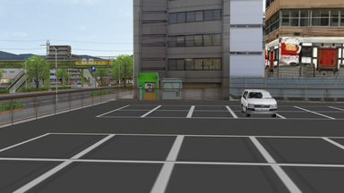 |  |
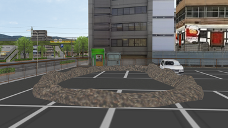 |
そこで、足跡モデルの作者は従来より、あるテクニックを用いてモデルを作ることでこの問題を回避してきました。
それは、足跡モデルの、地面よりもへこんでいる部分の少し上に、ほとんど透明な蓋をすることです。
| ほとんど透明な蓋を作った足跡モデル | 蓋部分を強調した画像 |
|---|---|
| 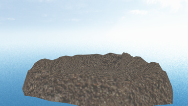 | 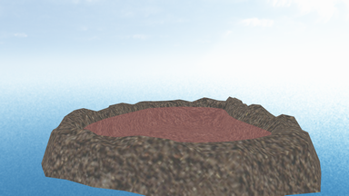 |
この蓋を作った足跡モデルは、MMDの描画順序設定を足跡モデル→街モデルの順にすることで、街モデルの地面に隠れてしまう部分を表示することができます。
何故そのようになるかの深い説明はここではしませんが、MMDの半透明面の描画仕様をうまく使ったトリックと言えるでしょう。
| 街モデル+ほとんど透明な蓋を作った足跡モデル |
|---|
| 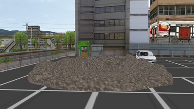 |
この手法はとても強力で手軽ですが、同時に限界も存在します。
それは一部エフェクトとの相性が悪いことと、足跡から背の高い物体がはみ出すことがあることです。
| ビームマンPのNewBomが蓋を境に消えてしまう | 蓋よりも上にある生垣や木が消えずに残ってしまう |
|---|---|
| 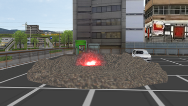 | 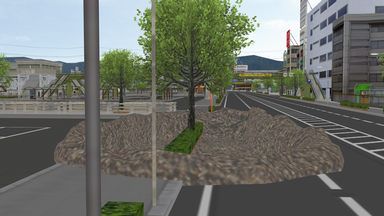 |
これらの問題を本質的に解決するためには、街モデルそのものに足跡モデル型の穴を開ける改造をしてしまうことが有効です。
この改造を行った街モデルと併用する場合には、もはや足跡モデルにほとんど透明な蓋は必要ではありません。
| 足跡モデル型の穴を開けた街モデル1 | 足跡モデル型の穴を開けた街モデル2 |
|---|---|
| 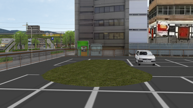 | 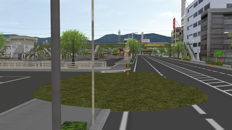 |
| 蓋が無いのでNewBomは蓋を境に消えることもない | 生垣や木はモデル改造で消えている |
|---|---|
| 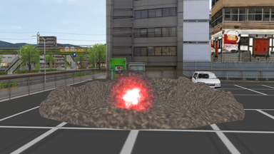 | 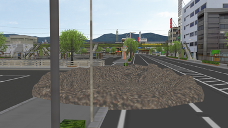 |
しかし、この手法がとられてくることは今日までほとんどありませんでした。
街モデルに足跡モデル型の穴を開ける改造をすることは、非常に困難なことなのです。
この困難な作業を代行するために本ツールは作られました。
本ツールは穴開け改造をほとんど自動で実行し、街モデルに足跡モデル型の穴を開ける手法への道を開きます。
本ツールを使うための事前準備
本ツールを使う前に、利用者側でいくつか準備しておくことがあります。
それは、以下の3つです。
- モデルがpmd形式やx形式である場合、pmx形式に変換する
- 足跡モデルにほとんど透明な蓋がある場合、蓋を取り除く
- MMD上で街モデルと足跡モデルを仮に配置する
順に説明します。
モデルがpmd形式やx形式である場合、pmx形式に変換する
本ツールは今のところpmx形式のモデルにしか対応していません。
そのため、事前に街モデルと足跡モデルをpmx形式に変換しておく必要があります。
変換には極北PのPmxEditorを使用します。
pmd形式の場合、ファイルを開いてから、名前をつけて保存をするだけで変換が完了します。
x形式のファイルの場合はこれに作業が2つ加わります。
ファイルを開く際に「サイズ調整」という名前のダイアログが現れるので、これはそのままOKを押してください。
名前をつけて保存をする前に、モデル名に適当な名前を入れておいてください。
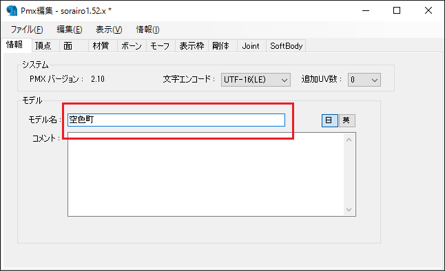
足跡モデルにほとんど透明な蓋がある場合、蓋を取り除く
本ツールで街モデルに穴開け改造を行ってしまえば、足跡モデルのほとんど透明な蓋はもはや不要になります。
PmxEditorによる編集で蓋を取り除いてください。
また、これはモデル改造にあたるので、足跡モデル側の利用規約をよく読み、モデル改造が許可されていることを確認してください。
ほとんど透明な蓋を取り除くには、足跡モデルをPmxEditorで開いた後、Pmx編集ウィンドウで材質タブをクリックします。
そして、非透過度が、0.01など0に極端に近い値の材質を探し、もしそのような材質があれば、材質をDeleteキーで削除してください。
材質を削除した後は、保存を忘れずに行ってください。
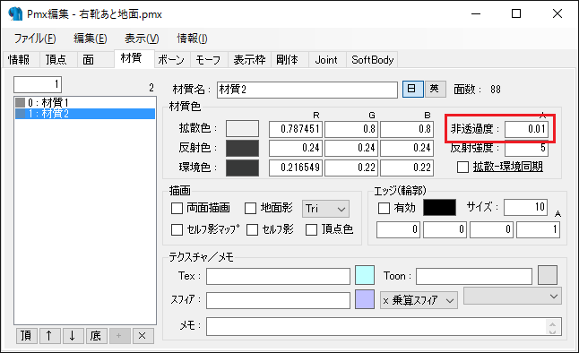
MMD上で街モデルと足跡モデルを仮に配置する
この時点で、穴の開いていない街モデルと、ほとんど透明な蓋の無い足跡モデルを用いて、MMD上でそれらを仮に配置してください。
何故ならば、街モデルのどこに穴を開ければよいのかを決めるために、街モデルと足跡モデルの配置情報が必要になるからです。
この時点では、足跡モデルのへこんでいる部分は街モデルの地面に隠れてしまいますが、気にしないでください。
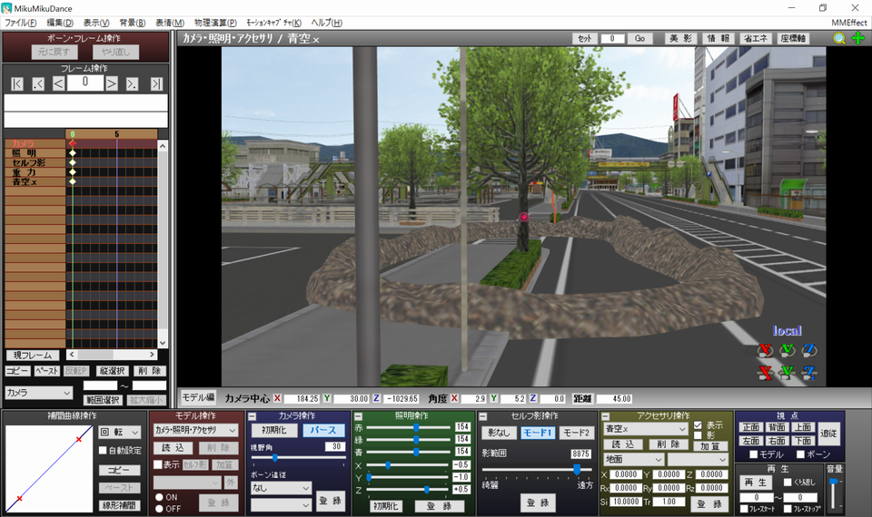
本ツールの使い方
入力する値の説明をします。
ファイル指定
穴を開けたい街モデルと、ほとんど透明な蓋を取り除いた足跡モデルのpmxファイルを、それぞれ選択してください。
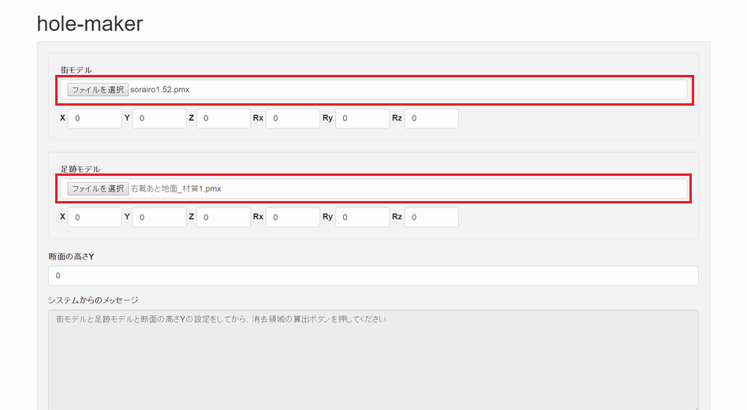
X/Y/Z/Rx/Ry/Rz
MMD上で街モデルと足跡モデルの一番上のボーン（「全ての親」や「センター」という名前になっていることが多いと思います）を選択し、それぞれのボーン位置と角度を、本ツールのX/Y/Z/Rx/Ry/Rzに書き写していってください。
本ツールのX/Y/Zはボーン位置のX/Y/Zに対応し、Rx/Ry/Rzは角度のX/Y/Zに対応します。
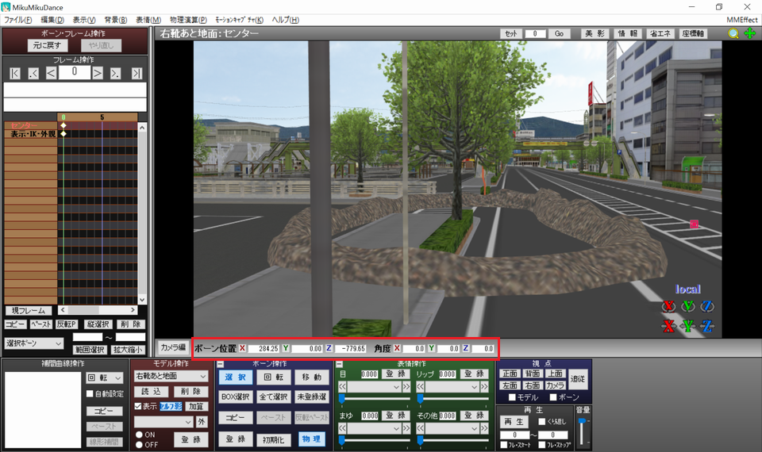
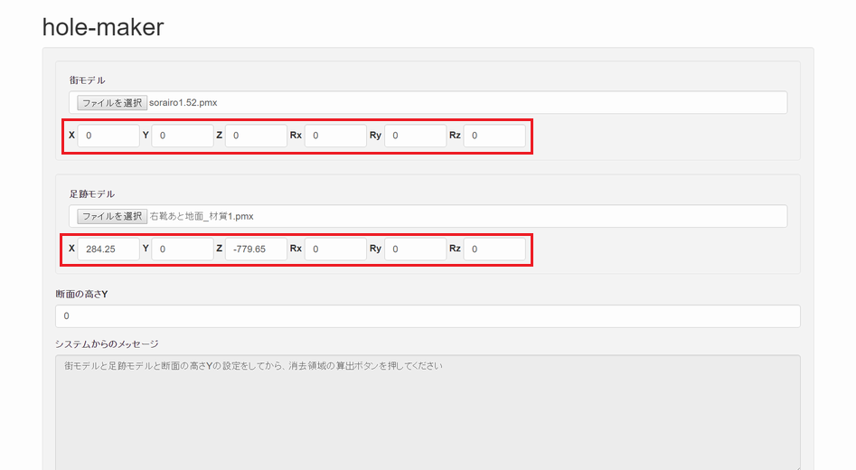
断面の高さY
断面の高さYは、足跡をつけたい地面の高さを指定します。
もし土手の上などに足跡をつけたい場合、土手の上のY座標を入力します。
（分かる人向けの追加説明: ここでY座標と言っているのは、街モデルのローカル座標系でのY座標です）
大抵の場合、足跡をつけたい地面のY座標は0でしょうから、断面の高さYには0を入力することが多いでしょう。
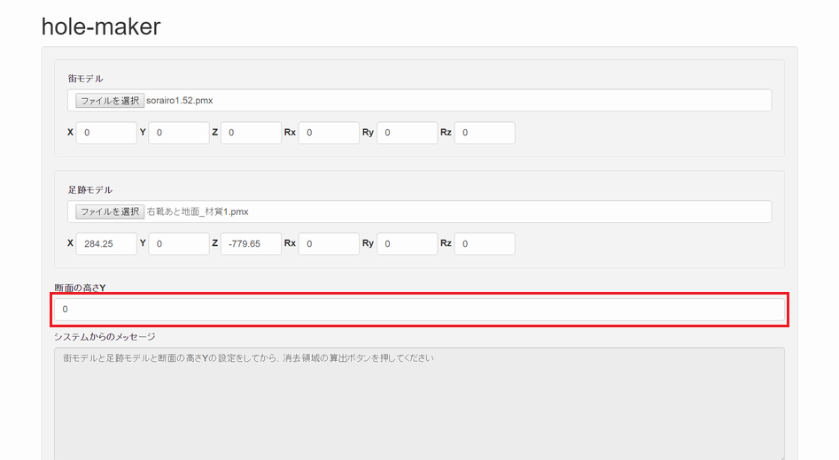
消去領域の算出
ここまでの入力値を設定し終わると、消去領域の算出ボタンを押すことで、街モデルに開ける穴の領域の候補を計算することができます。
穴の領域の候補は次のようなプレビューに表示されます。
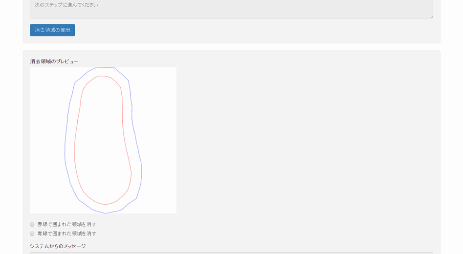
消去領域について
足跡モデルが、へこんだ部分の周囲に盛土状の部分を持っているとき、通常、赤線で囲まれた領域と青線で囲まれた領域がプレビューに一つずつ現れます。
通常、赤線が盛土の内側の輪郭を表し、青線が盛土の外側の輪郭を表しています。
イメージとしては次のような感じです。
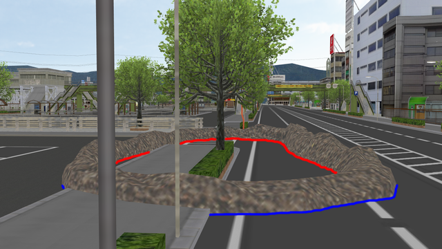
この場合、赤線で囲まれた領域を消すか青線で囲まれた領域を消すか選択することができます。
どちらを選んでも得られる結果はそう大きくは変わりませんが、盛土部分において微妙な違いがあります。
赤線で囲まれた領域を消すと、盛土の内側の輪郭と、最も盛り上がった部分との間にある物体が残ってしまいます。
また、青線で囲まれた領域を消すと、盛土の外側の輪郭と、最も盛り上がった部分との間にある物体が消えてしまいます。
状況に応じて使い分けてください。
| 赤線で囲まれた領域を消すと不都合な場合 | 青線で囲まれた領域を消すと不都合な場合 |
|---|---|
| 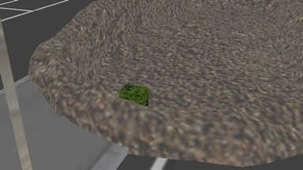 | 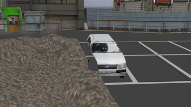 |
足跡モデルの形状や断面の高さYの設定次第では、ここまでの通常の場合の説明と違って、赤線で囲まれた領域と青線で囲まれた領域が一つずつ現れないこともあります。
その場合でも赤線で囲まれた領域を消したり、青線で囲まれた領域を消したりすることはできます。
ただし、本ツールには今のところ、赤線で囲まれた領域を消す場合は、赤線で囲まれた領域は一つでなければならず、青線で囲まれた領域を消す場合は、青線で囲まれた領域は一つでなければならないという制限があります。
例えば、下の画像のような場合は街モデルに穴を開ける処理を実行することはできません。
このときは、断面の高さYを調整するとどうにかなる場合があるので、調整してみてください。
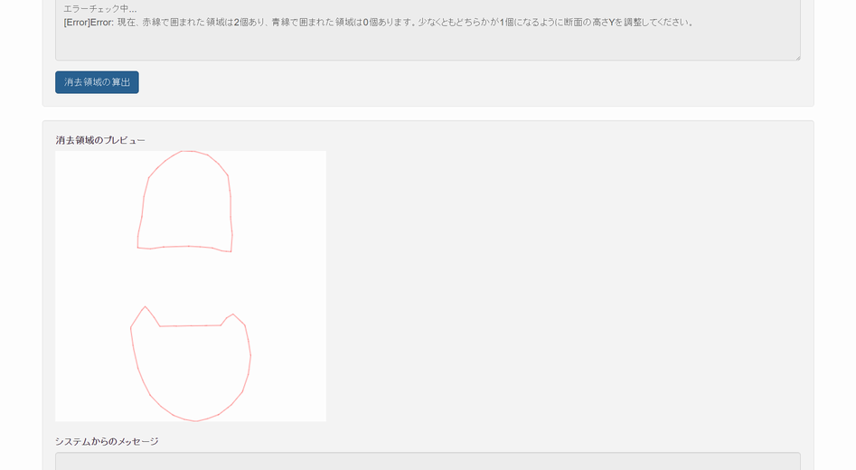
FAQ
穴開け処理に時間がかかりすぎる
今のところは我慢してください。
将来、処理を高速化するかもしれません。
動かない
必須ではありませんが、最新のGoogle Chromeの利用を推奨します。
もしエラーが起こった場合、使用ブラウザとエラーメッセージを私のTwitterなどに伝えていただけるとありがたいです。
なお、IE9以下に対応する予定はありませんのであしからず。
街モデルに足跡を複数個開けたい
本ツールを繰り返し使って、足跡を1個ずつ開けていってください。
利用規約は？
本ツールの利用規約はありません。
街モデルと足跡モデルの利用規約が許す限りにおいて、出力されたモデルをどのような用途に利用しても構いません。
また、本ツール自体の改造も歓迎しています。
赤線で囲まれた領域を消しても青線で囲まれた領域を消しても、盛土部分が不自然になってしまう
場合によりますが、「赤線と青線の中間の線」があれば問題が解決するようなときがあると思います。
それとほぼ同じことをするには、断面の高さYを、地面よりも高く、かつ盛土の最も盛り上がった部分よりもわずかに低い値にすればよいです。
赤線と青線ができるだけ近くなるように、断面の高さYを徐々に上げていってみてください。